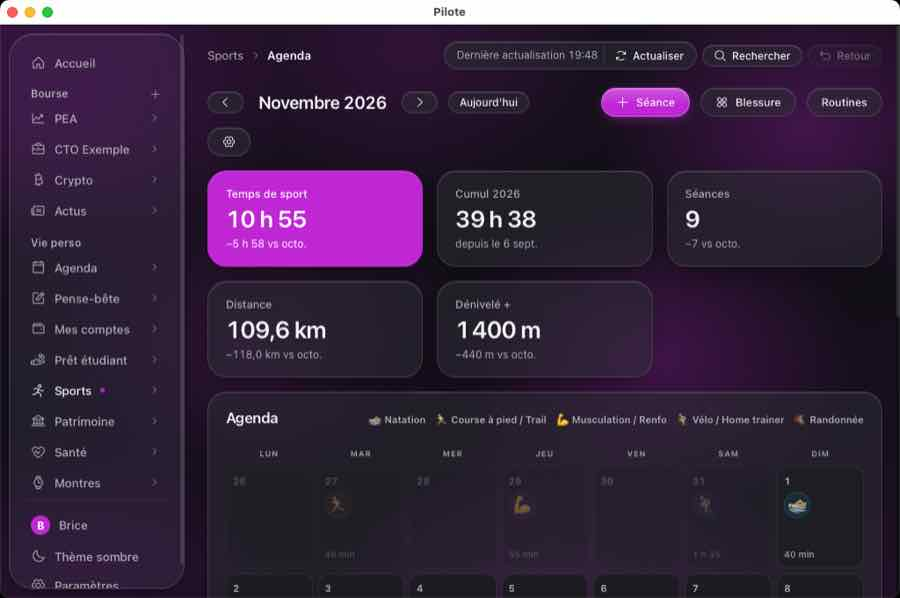

Vos séances, vos objectifs, votre montre.
Un agenda de vos séances, des objectifs avec compte à rebours, des statistiques du mois et de l'année. Les séances de votre montre Garmin ou Coros arrivent toutes seules, et restent sur votre ordinateur.


Ce que Pilote suit
Agenda des séances
Course, vélo, natation, musculation, foot, randonnée, ou vos propres sports avec les informations que vous choisissez : durée, distance, dénivelé, lieu, routine.
Objectifs
Une performance à atteindre, ou une course à préparer avec son compte à rebours.
Statistiques
Temps de sport, distance, dénivelé et nombre de séances, comparés au mois précédent et cumulés sur l'année.
Blessures
Notez quand vous êtes blessé et où : les jours concernés se voient dans l'agenda, et le compte des jours blessés de l'année aussi.
Vos montres
Pilote lit votre montre, il n'y écrit jamais rien.
Garmin
Avec votre clé personnelle de Garmin Connect, vos séances arrivent dans Sports, vos pesées dans Santé, et votre forme du jour (sommeil, Body Battery, VFC, pas…) dans l'onglet Ma forme.
Coros
Une connexion à votre compte Coros, en lecture seule, pour récupérer vos séances.
Fichiers .fit
Le format de presque toutes les montres et applications de sport : glissez vos fichiers, Pilote en fait des séances. Une séance vue par deux montres n'est comptée qu'une fois.
Essayer Pilote
Gratuit, sans compte et sans publicité. Vous ne cochez que les parties qui vous servent.

Pilote suit aussi
Bourse
PEA, comptes-titres et crypto : positions, dividendes, frais, composition des ETF.
Pilote pour la bourseBudget
Dépenses du mois par catégorie, relevés de banque importés, patrimoine.
Pilote pour le budgetSanté
Poids et composition corporelle, lus depuis l'application de votre balance.
Pilote pour la santé